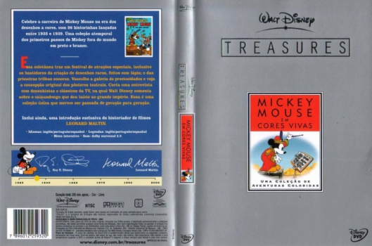

País:United States, 255 minutos
Idiomas falados:Espanhol, Inglês, Português
Gênero(s):Família, Animação
Diretor(s):
Escritor(es):
Codec:MPEG-2 (DVD)
Número: 5815


Certificado:
Sinopse:
Coletânea dos primeiros 26 curtas do Mickey a cores, em dois DVDs: Disco 1) "Desfile dos Indicados" (bônus); 1935 - "Mickey, O Maestro"; "O Jardim do Mickey"; "No Gelo"; "O Julgamento de Pluto"; "A Brigada do Mickey". 1936 - "Do Outro Lado do Espelho"; "O Circo de Mickey"; "O Elefante de Mickey"; "A Grande Ópera de Mickey"; "O Time de Polo do Mickey"; "Os Alpinistas"; "Dia de Mudança"; "O Rival de Mickey"; "Piquenique dos Órfãos".
No Disco 2) 1937 - "Férias no Havaí"; "Caçadores de Alces"; "A Fórmula Mágica"; "Mickey e o Mágico"; "Show de Calouros do Mickey"; "Relojoeiro das Alturas"; "Os Fantasmas Solitários". 1938 - "O Papagaio do Mickey"; "Engenheiros Desastrados"; "Caça à Baleia"; "O Trailer de Mickey"; "O Pequeno Alfaiate Valente".
Elenco:
Tipo de mídia: DVD5,
Legendas: Espanhol, Inglês, Português, Sem Legendas
Alugado: Não
Tela: Anamorphic Widescreen